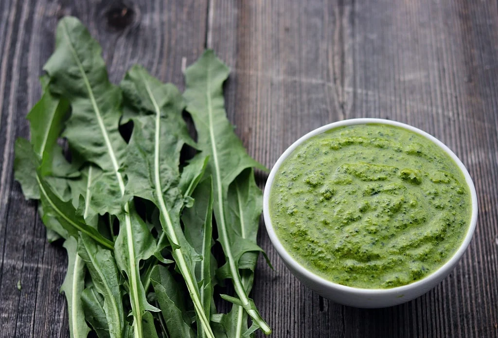

♥ Pesto ♥

Pesto with Miscellaneous Herbs
You can make pesto with a variety of green herbs. The photo above shows pesto made with dandelion greens, but you can also make it with cilantro or the traditional basil.
Some people add extra ingredients, like a tiny bit of evaporated milk or lemon. It's up to you.
Ingredientes
- Hojas de albahaca
- Ajo
- Queso parmesano
- Piñones
- Aceite de oliva
- Sal y pimienta (muy poquito)
Paso a Paso
- Put leaves in blender
- Put peeled ajo in blender
- Add queso
- Add the rest of ingredients, to taste
- Blend
- That's pretty much it!